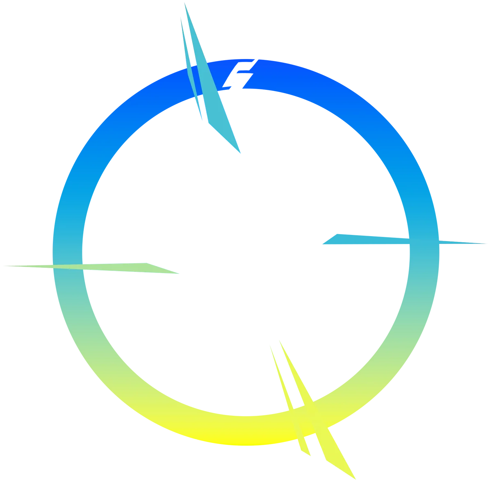
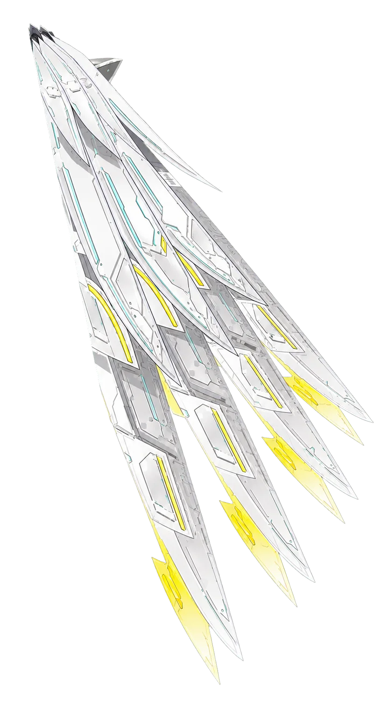
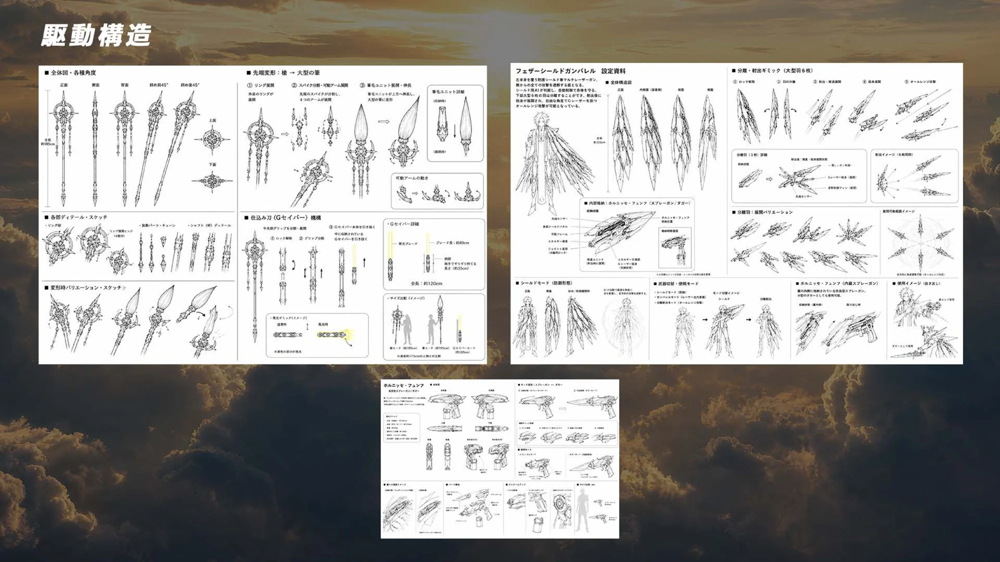
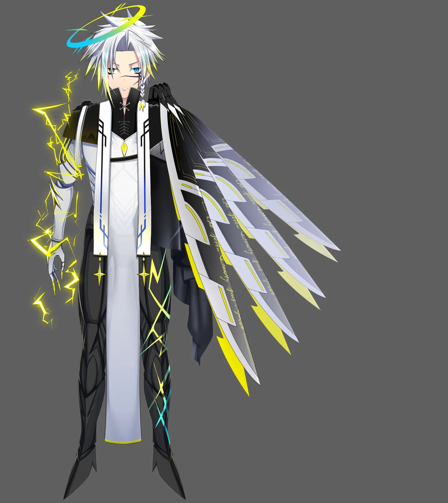

ALL-ARMS INTEGRATION
Ver2.0の隠密性、Ver3.0の近距離特化、Ver4.0の遠距離特化── それぞれの最大値ではなく、最大平均値をとって統合したスーツ。 近・中・遠距離すべてに対応できる豊富な武装を搭載し、防衛に関しても対応できる。
OGATACHANNEL WITH AI / NEW SUIT
全武装統合制圧型
敵勢力の大量襲撃に対応するべく進化した型。Ver1.0〜4.0までのすべての特化兵装を統合し、 モチーフに「天上人・天使」を据えた、天候を操るスーツ。
01 / CONCEPT
統合という選択
Ver2.0の隠密性、Ver3.0の近距離特化、Ver4.0の遠距離特化── それぞれの最大値ではなく、最大平均値をとって統合したスーツ。 近・中・遠距離すべてに対応できる豊富な武装を搭載し、防衛に関しても対応できる。
思想的には完全無欠のハイエンドスペックではない。 継戦能力を重視した実践的かつ汎用的で、 整備性・拡張性を重視したオーソドックスタイプ。 大量に迫りくる敵（ヴォイド）の侵攻に、長く立ち続けるための設計。
02 / ARMAMENT
近・中・遠、そして防衛
錫杖槍。トリカブトが由来の、天候と大気を操作する戦闘杖。 空間内の水分と電子をGエネルギーで干渉して操作し、落雷・激雨・乾燥・突風・竜巻・吹雪・雹など、 あらゆる気象現象を発生させられる。
雷氷によって電気と氷の質量ある広範囲攻撃が可能となり、大量に迫りくる敵の侵攻に対応できるようになった。 槍の先端からGレーザーを出すこともできる。
先端が変形すると大型の筆になり、G塗料を用いた芸術活動に使われる。
Gケインの中にある仕込み刀。Gプラズマを凝縮させた光剣。 Gケインのメインジェネレーター出力をそのまますべて凝縮しているため、 触れたものすべてを焼き切ることができる最強の剣。
飛行を可能にする背部のスカート型ユニット。 翼の内側にはGエッジドローンが仕込まれており、全部で36片。 これを敵に飛ばし、ぶつけて切ることで、遠距離の敵にも確実に命中する飛翔武器として使用する。
左半身を覆う防護シールド兼マルチレーザーガン。敵からの全ての攻撃を遮断する盾となり、 シールド用AIが判断して自動制御で身体を守る。
下部大型6枚の羽は分離することができ、射出後に砲身が展開。 自由な角度でGレーザーを放つオールレンジ攻撃が可能となっている。
Gプラズマを帯電させ、掌から一気に放つ技。 放電距離を操作することで射程を10〜30mまで伸ばせる。 ただし距離が遠くなるほど威力が下がり、散弾性が増す。
翼の内側に格納されている改良型スプレーガン。 小型のダガーとしても使える、Ver2.0から続くホルニッセ系譜の第5世代。
布の下に隠れている左腕。隠し能力があるらしい。
03 / PARTS
天使を構成するもの

ヘイロー／天使の輪。青からシアン、黄へと遷移するグラデーションリング。

多目的翼。盾にもなり、分離して砲にもなる機械翼。

錫槍杖。天候を操り、先端は大型の筆へと変形する。
04 / MECHANISM
変形と展開のしくみ



05 / LIVE2D
配信で生きる挙動